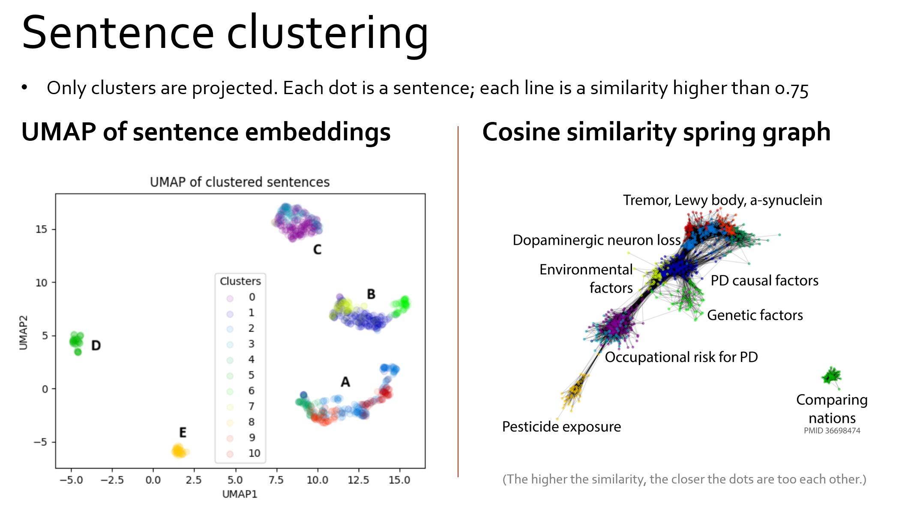
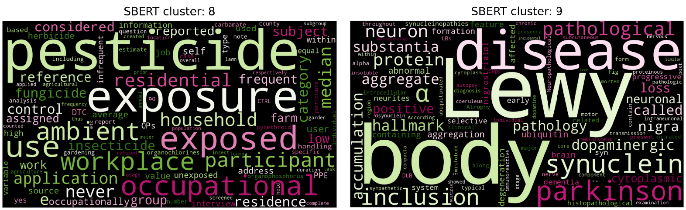
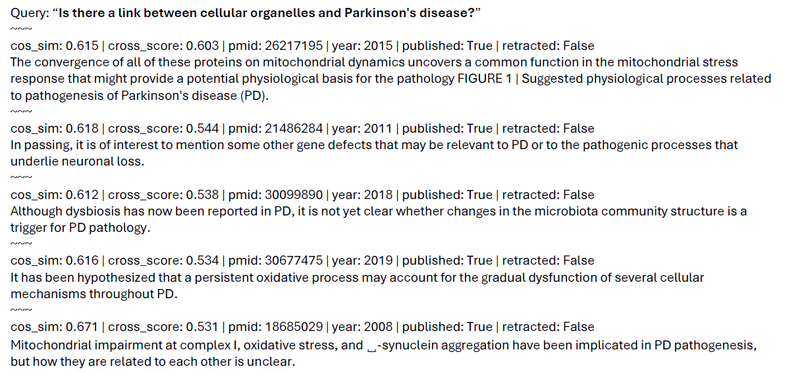
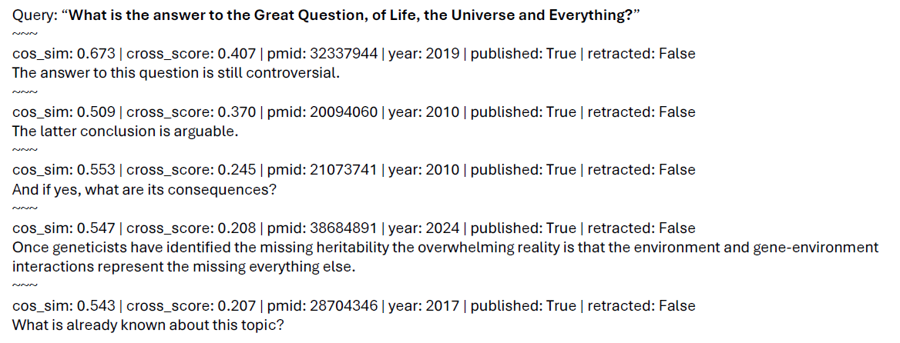

There are multiple options for analysing the obtained corpus once the pipeline is finished. Here we will highlight sentence clustering and semantic search. For the complete overview of options, see the ‘Getting Started’.
Exploration without prior knowledge [sentence clustering]
Sentence clustering provides insight into knowledge in an unsupervised and therefore unbiased way. The clustering was done according to the sentence’s cosine similarity scores with the fast clustering algorithm available in the SBERT library.
Here is a use case example where the pipeline was used for “(pesticide OR pesticides) AND parkinson’s”

Figure 1: Visualisations of the 975 clustered sentences. Both plots share the same legend. Annotations is in order of cluster size. (Left) UMAP projection of sentence embeddings, highlighting five main clusters (A–E). (Right) Spring graph representation based on cosine similarity scores, with cluster indices shown. Edge weights correspond to similarity scores. Weights smaller than 0.75 are excluded.
Two different visualisations are depicted of these clusters in Figure 1; namely a UMAP and a spring graph. Both confirming identified cluster pairs. Note that the UMAP represents relationships in a two‑dimensional embedding (implicitly including the vector norm), whereas the graph represents connectivity strengths between sentences via edge weights (excluding the norm) – this is also the reason why no axis are depicted in the graph representation. Note therefore that the graph only shows the relation between sentences that are connected.
Topics that are addressed in the clustered sentences can be deducted from differential word clouds, see Figure 2. Differential word clouds are visualisations of word frequencies that are specific to given sentence cluster and are created by subtracting word frequencies in sentences outside a given cluster from those within the cluster.

Figure 2: Differential word clouds of sentence clusters based on similarity. The bigger the word, the more often it appeared.
Exploration with prior knowledge [semantic search]
Semantic search provides a means of navigating the sentence embedding space by retrieving sentences that are semantically similar to an asked query.
Here is a use case example where the pipeline was used for “(pesticide OR pesticides) AND parkinson’s”
Table 1: The top five results are presented for the queried question, including the cosine similarity score (cos_sim), cross-encoder score (cross_score), PMID, year of publication, peer-review status (published), and retraction status. Sentences are ranked according to their cross_score.

